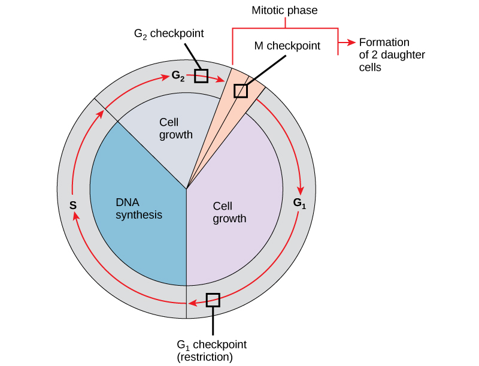

Press Enter to scroll back to top
The cell cycle can be thought of as the life cycle of a cell. It controls the growth and division of cells. It includes three steps such as the the first gap phase (G1), synthesis phase (S), second gap phase (G2). The two growth phases and the synthesis phase of the cell cycle are often referred to as interphase of mitosis. The interphase takes place between one mitotic (M) phase
During G1 phase, also called the first gap phase, the cell grows physically larger, copies organelles, and makes the molecular building blocks it will need in later steps.
In S phase, the cell synthesizes a complete copy of the DNA in its nucleus. It also duplicates a microtubule-organizing structure called the centrosome. The centrosomes help separate DNA during M phase.
During the second gap phase, or G2, the cell grows more, makes proteins and organelles, and begins to reorganize its contents in preparation for mitosis. G2 phase ends when mitosis begins.
The Cell Cycle goes through a process of cell division call mitosis. Mitosis is a type of cell division in which one cell, the mother, divides to produce two new cells, the daughters, that are genetically identical to itself. Mitosis is the part of the division process in which the DNA of the cell's nucleus is split into two equal sets of chromosomes. Meiosis, on the other hand, is used for just one purpose in the human body. Its goal is to make daughter cells with exactly half as many chromosomes as the starting cell.
There are four phases of Mitosis.
There are two types of prophase.
In early prophase, the cell starts to break down some structures and build others up, setting the stage for division of the chromosomes.
The chromosomes start to condens which make them easier to pull apart later on.
During the this process, the mitotic spindle begins to form. The spindle is a structure made of microtubules, strong fibers that are part of the cell’s “skeleton.” Its job is to organize the chromosomes
and move them around during mitosis. The spindle grows between the centrosomes as they move apart.
The nucleolus, a part of the nucleus where ribosomes are made, disappears. This is a sign that the nucleus is getting ready to break down.
In late prophase, sometimes also called prometaphase, the mitotic spindle begins to capture and organize the chromosomes.
The chromosomes finish condensing, so they are very compact.
The mitotic spindle grows more, and some of the microtubules start to “capture” chromosomes.
The nuclear envelope breaks down, releasing the chromosomes.
Microtubules can bind to chromosomes at the kinetochore, a patch of protein found on the centromere of each sister chromatid. Centromeres are the regions of DNA where the sister chromatids are most tightly connected.
Microtubules that bind a chromosome are called kinetochore microtubules. Microtubules that don’t bind to kinetochores can grab on to microtubules from the opposite pole, stabilizing the spindle. More microtubules extend from each centrosome towards the edge of the cell, forming a structure called the aster.
In metaphase, the spindle has captured all the chromosomes and lined them up at the middle of the cell, ready to divide.
During this phase, all the chromosomes align at the metaphase plate. (This is not an actual plate. It is just a term used where the chromosomes line up.)
At this stage, the two kinetochores of each chromosome should be attached to microtubules from opposite spindle poles.
Before proceeding to anaphase, the cell will check to make sure that all the chromosomes are at the metaphase plate with their kinetochores correctly attached to microtubules. This is called the spindle checkpoint and
helps ensure that the sister chromatids will split evenly between the two daughter cells when they separate in the next step. If a chromosome is not properly aligned or attached, the cell will halt division until the problem is fixed.
In anaphase, the sister chromatids separate from each other and are pulled towards opposite ends of the cell.
The protein “glue” that holds the sister chromatids together is broken down, allowing them to separate. Each is now its own chromosome. The chromosomes of each pair are pulled towards opposite ends of the cell.
Microtubules not attached to chromosomes elongate and push apart, separating the poles and making the cell longer.
All of these processes are driven by motor proteins, molecular machines that can “walk” along microtubule tracks and carry a cargo. In mitosis, motor proteins carry chromosomes or other microtubules as they walk.
In telophase, the cell is nearly done dividing, and it starts to re-establish its normal structures as cytokinesis (division of the cell contents) takes place.
The mitotic spindle is broken down into its building blocks.
Two new nuclei form, one for each set of chromosomes. Nuclear membranes and nucleoli reappear.
The chromosomes begin to decondense and return to their “stringy” form.
Mitosis is the process by which somatic cells divide or replicate themselves. When mitosis goes wrong, cells can grow uncontrollably.Cells however, have ways of ensuring that mitosis does not go wrong, but when these “safeguards fail”, faulty mitosis produces mutant cells. These mutant cells, cancer cells, are caused because your body has many different signals that control how much, and how often your cells divide. If your cell certain sequence is not aligned in the right order or at the right time cancer than occurs.
Mitosis has several processes with checkpoints to make sure things are going properly. If a cell detects that something has gone wrong during mitosis, the first thing it does is to stop the process. The three major checkpoints during mitosis are the G1, G2 and mitotic spindle checkpoints. Which all provide the cell with an opportunity to intervene if something goes wrong in order to fix the problem. Each checkpoint has a specific proteins that ensure that everything is working properly.
During mitosis, the DNA within the cell duplicates. The process involves many changes and the movement of chromosomes and organelles within the cell. This activity can sometimes cause DNA to break. If the cell is able to detect broken DNA, mitosis ceases and an elaborate DNA repair process is activated. After detecting damage, it causes the cell cycle to stop, which allows time for repairs.
Sometimes a cell cannot fix the problem, leading to apoptosis. Apoptosis, known as programmed cell death, ensures that if mitosis goes wrong and cannot be fixed, the cell does not continue to divide. If it does, it would lead to the production of mutant cells that might cause problems.
If an error occurs during mitosis but the cell still divides, it produces two mutant cells. These mutants can contain the wrong number of chromosomes or broken chromosomes. Since chromosomes carry the cell's DNA, mutant cells will not function normally. This means that mutant cells may die sooner than they should, or they may grow uncontrollably, which results in cancer.
Errors in mitosis normally occur during metaphase, when the chromosomes align at the metaphase plate. If the duplicate chromosomes do not pair properly at the metaphase plate, the pair will not move properly to each pole during anaphase. This results in one cell having two copies of the chromosome, while the other cell has none. This type of error is normally fatal to the daughter cell lacking a copy of a chromosome. Cells receiving two copies of a chromosome will have an increase in expression of the genes contained on the extra chromosome. If the genes function to slow growth, the extra copy may be fatal to the cell. However, if the genes promote growth, the cell may grow uncontrollably, leading to cancer.